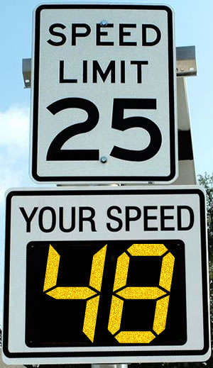

“More work with fingers, less work with brain”
I was listening to Adventures in Elm by Jessica Kerr and I was stuck for a while on the following idea:
My fingers work…I’d rather do a little more work with my fingers and less work with my brain because I want to be able to save my decision power for my actual business logic.
The idea is that, due to the contraints of a statically typed language like Elm, you’re forced into writing code that your future self has an easier time reasoning about. I get it.
It’s this very notion which has led to a lot of shaming of Javascript as of late.
I, however, think the conversation is more nuanced.
As someone who enjoys mentoring new developers, the utililty of opening literally any browser and pressing CMD + OPT + i to invoke a REPL and tinker and prototype and explore cannot be understated. Javascript is fast, expressive, and it runs everywhere.
I do believe maintainability is crucial. However, shortening the path to gratification, especially for new developers, is invaluable.
Your Speed

Consider the “Your Speed” traffic sign, which embodies the Evidence, Relevance, Consequences, and Action Feedback loop cycle concept – outlined here.
- The driver is immediately shown evidence that they’re speeding
- It’s put into perspective by contrasting the speed limit
- The driver is reminded about consquences – tickets, citations, etc.
- The driver slows down as a results.
Javascript is the “Your Speed” sign for young developers. With little ceremony – install steps, etc. – a developer is instantly injected into this feedback loop and they’re able to modify their behavior nearly real-time.